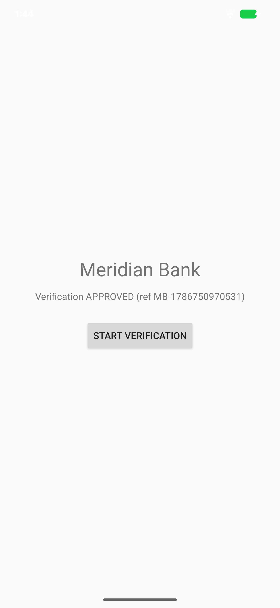
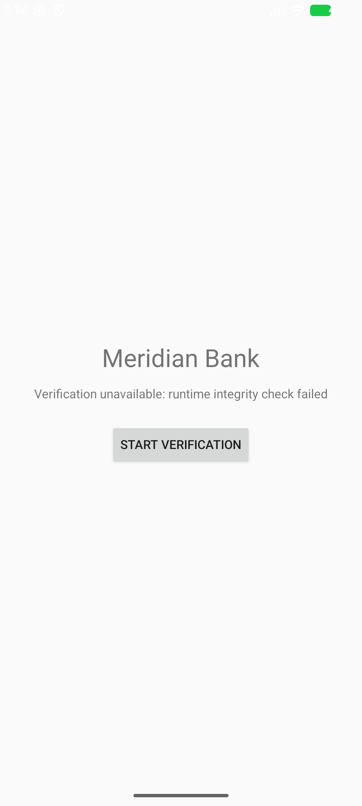

You have an app. You want to embed VerifyID, a third-party KYC provider, as a live pane inside your own window — not launched in a separate task, not screen-recorded, not a WebView — but only after you've cryptographically verified it's the real VerifyID binary. VerifyID itself refuses to run on a compromised device: it's RASP-guarded (Runtime Application Self-Protection) and self-terminates if the runtime looks rooted, hooked, or emulated.
Two independent guarantees are at work here, and you only build one of them:
Here's the finished happy path — the host app showing VerifyID's APPROVED result rendered inside its own window:

This codelab is the integrator's path: add the dependency, get the provider, open a verified pane, exchange typed data, and handle failure. You do not build VerifyID — it's a given.
:sample-kyc-host in the pipe monorepo as the reference host.:sample-kyc-verifier in this repo stands in for it.minSdk 30+.Your host app needs uI-PiPe's core host API, its typed-messaging extension, and the wire types VerifyID's team publishes for its request/response payloads:
dependencies {
implementation("com.github.iamjosephmj.uI-PiPe:pipe:1.0.0-alpha02")
implementation("com.github.iamjosephmj.uI-PiPe:pipe-serialization:1.0.0-alpha02")
implementation(project(":sample-kyc-contract")) // VerifyID's published wire types
}
In this repo the third line is a local module (:sample-kyc-contract); in a real integration it's whatever artifact VerifyID's team publishes — the point is the same: you depend on their contract, you don't invent your own.
VerifyID ships as a provider app. You install it like any other APK:
adb install verifyid.apk
In this repo that's the :sample-kyc-verifier sample:
./gradlew :sample-kyc-verifier:installDebug
KycContract.ACTION_KYC is the intent action VerifyID's pane is opened with; KycRequest / KycResult are the typed payloads exchanged once the pane is open:
object KycContract {
const val ACTION_KYC = "pipe.demo.kyc"
}
@Serializable
data class KycRequest(val reference: String, val level: KycLevel)
@Serializable
data class KycResult(val reference: String, val status: KycStatus, val issuedAtEpochMs: Long)
adb shell pm list packages | grep kycverifier
Expected: VerifyID's package is installed on the device/emulator.
This is the core step: hand your window to VerifyID only after checking its identity.
Modern Android hides other apps' packages by default. Declare VerifyID in
<manifest xmlns:android="http://schemas.android.com/apk/res/android">
<queries>
<package android:name="tech.ssemaj.pipe.kycverifier" />
</queries>
...
</manifest>
As the integrator, you don't own VerifyID's keystore — you only have their APK. Extract the digest from the installed/shipped binary with apksigner (ships in the Android SDK build-tools):
apksigner verify --print-certs verifyid.apk
This prints a line like:
Signer #1 certificate SHA-256 digest: 21027f81c7dacf5c09246d1eb6e61a4ea797ef5a8e198e74721be8739cd3e706
That digest is already lowercase hex with no colons — exactly the format uI-PiPe's allowlist expects, no normalization needed. (keytool -printcert -jarfile verifyid.apk works too, but prints uppercase hex with colons that you'd have to strip and lowercase yourself.)
private companion object {
const val VERIFIER_PKG = "tech.ssemaj.pipe.kycverifier"
const val VERIFIER_SVC = "tech.ssemaj.pipe.kycverifier.KycVerifierService"
// VerifyID's signing-cert SHA-256 (lowercase hex, no colons) — the pinned provider identity.
const val VERIFIER_CERT_SHA256 = "21027f81c7dacf5c09246d1eb6e61a4ea797ef5a8e198e74721be8739cd3e706"
}
PipeFullScreen.open(
activity = this,
provider = ProviderComponent(VERIFIER_PKG, VERIFIER_SVC),
request = PipeRequest(KycContract.ACTION_KYC, extras),
authorizer = PipeAuthorizers.allowlist(VERIFIER_CERT_SHA256),
onSession = { session -> /* next step */ },
onError = { e -> /* next step */ },
)
PipeAuthorizers.allowlist(...) compares uI-PiPe's kernel/PackageManager-derived signing identity for the bound peer — never anything the provider self-reports — against the digests you pass. Only on a match does open() hand VerifyID the window token at all.
Corrupt one hex character of VERIFIER_CERT_SHA256 and retry. Expected: onError fires with a PipeDeniedException whose message is peer signing certs not in allowlist — no pane ever appears, no window token is ever handed over.
Pinning is symmetric — VerifyID could equally pin your signing cert in its own authorizer(). Here you're the one pinning them; see the appendix for the provider side.
With the correct digest restored, the pane should open normally over your app's window.
Once onSession fires you have a live PipeSession. Send VerifyID a typed request, and await its typed result:
onSession = { session ->
lifecycleScope.launch {
session.send(KycRequest(reference, KycLevel.ENHANCED))
val result = session.messagesOf<KycResult>().firstOrNull()
if (result != null) {
status.text = "Verification ${result.status} (ref ${result.reference})"
}
// else: session closed before a result (e.g. RASP killed the verifier);
// the state-close collector below shows the failure message.
}
lifecycleScope.launch {
val closed = session.state.first { it is PipeState.Closed } as PipeState.Closed
if (closed.cause != null) {
status.text = "Verification unavailable: runtime integrity check failed"
}
}
},
onError = { e ->
status.text = when (e) {
is PipeDeniedException -> "Verifier rejected: ${e.reason}"
else -> "Verification unavailable (${e::class.simpleName})"
}
},
firstOrNull, not firstThis is load-bearing, not defensive-programming decoration. Flow.first() throws NoSuchElementException if the underlying channel closes having emitted nothing — exactly what happens if VerifyID's process dies (killed by RASP, a crash, anything) before it calls host.send(...). An uncaught NoSuchElementException on this coroutine crashes your entire app, not just the pane. firstOrNull() instead completes quietly with null, and the sibling coroutine watching session.state for PipeState.Closed(cause) reports the graceful failure message. The two coroutines run independently — one succeeding never protects the app from the other throwing, so each has to be individually safe.
The onError branch covers the other failure shape: distinguish a PipeDeniedException (the identity gate rejected the bind — see previous step) from anything else.
Run the happy path: the status line should read Verification APPROVED (ref ...).
As the integrator, you don't build RASP — VerifyID ships hardened, and that's the point of choosing a RASP-guarded provider. VerifyID's guarded build self-terminates the moment it detects a rooted, hooked, tampered, or emulated device — before any KYC UI or logic runs, before any data (mock or real) is touched.
To you, that failure never looks like a special "RASP" case. It surfaces exactly like any other mid-flow provider death: the pane closes, session.state emits PipeState.Closed(cause), the result Flow closes empty, and the firstOrNull() / Closed(cause) handling you already wrote in the previous step reports it gracefully instead of crashing:

Status text: Verification unavailable: runtime integrity check failed. Your app's process never dies, and the Start verification button stays usable.
If you also want to see how a provider like VerifyID is built — including the RASP wiring — see the appendix below.
This is reference material, not a build-along — you're integrating VerifyID, not building it. Skip this if you only care about the host side.
A PipeProviderService whose onOpenPane returns a rendered pane:
class KycVerifierService : PipeProviderService() {
// Host→verifier pinning is the codelab's lesson: the BANK pins US. We accept the bank as-is.
override fun authorizer(): PipeAuthorizer = PipeAuthorizer { _, _ -> AuthDecision.Allow }
override suspend fun onOpenPane(request: PipeRequest, host: HostHandle): PaneResult {
val reference = request.extras.getString("reference") ?: "unknown"
val bankName = request.extras.getString("bankName") ?: "the bank"
val content = KycPaneView(
ctx = this,
bankName = bankName,
onDecision = { status ->
paneScope.launch {
host.send(KycResult(reference, status, System.currentTimeMillis()))
host.close()
}
},
onClose = {},
)
return PaneResult.Content(content)
}
}
authorizer() is overridden to admit any caller because VerifyID and the host are signed with different keys by design — the default authorizer() (sameSigningKey) would reject the host outright. VerifyID instead relies entirely on the host pinning its cert (the codelab's core step). A production provider would likely pin the host's cert here too, symmetrically.
VerifyID's guarded build variant applies the hydra RASP Gradle plugin, opt-in via a -Prasp property so a plain build stays emulator-runnable:
val raspEnabled = providers.gradleProperty("rasp").isPresent
if (raspEnabled) apply(plugin = libs.plugins.hydra.get().pluginId)
Negative : The one integration gotcha. hydra 2.3.0's plugin injects a project-level Maven repo (hydraRuntime) to serve its vendored runtime AAR. If your root settings.gradle.kts pins dependencyResolutionManagement.repositoriesMode to FAIL_ON_PROJECT_REPOS, that hard-fails the build the instant hydra's plugin applies. The fix is two parts: use RepositoriesMode.PREFER_SETTINGS instead, and declare hydra's runtime repo yourself in settings, group-scoped so it can't shadow anything else:
dependencyResolutionManagement {
repositoriesMode.set(RepositoriesMode.PREFER_SETTINGS)
repositories {
google()
mavenCentral()
maven(rootDir.resolve("build/hydra/m2")) {
name = "hydraRuntime"
content { includeGroup("io.ssemaj.rasp") }
}
}
}
Full source: :sample-kyc-verifier.
Where to go next:
BIND_PANE model.